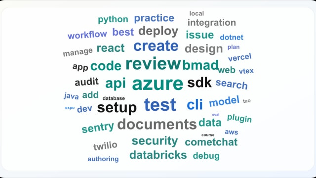

Guides
AI Guides
Practical guides for builders working with reusable AI agent workflows, skills, and skills-compatible tools.
An AI agent skill is a product marketing asset now
Learn how to design a product skill, publish it in marketplaces, earn featured visibility, and build a useful sharing loop.
Ponytail, Caveman, Grill Me and other viral AI agent skills
See what Ponytail, Caveman, Grill Me, Find Skills, and other trending agent skills do, why they spread, and how to evaluate them.

Official AI agent skills statistics
See which companies publish the most official skills, which repos have the strongest adoption signals, and which software segments are covered.
Are AI agent skills here to stay?
Learn why AI agent skills are growing, where the format is going, and how free, official, and paid skills may evolve.
Lovable skills for AI builders
Learn how to use Lovable skills with official skills for SEO, auth, backend, analytics, payments, and observability.
What is Hermes Agent?
Learn what Hermes Agent does, which models it supports, and how official Nous Research skills work.
What are the security risks of AI agent skills?
Learn the main risks with third-party skills, how to reduce them, and how to find official skills before installing.
How to organize AI agent skills
Learn how to keep one shared skill library across Claude, Codex, Cursor, Windsurf, and GitHub Copilot with clear scope and reliable sync.
What are AI agent skills?
Learn what AI agent skills are, how they work, what goes inside a
SKILL.md folder, and why reusable workflows matter.